ابوریحان بیرونی
ریاضیدان، منجم و پیشگام روشهای تحلیلی
۹۷۳ — ۱۰۴۸ میلادی

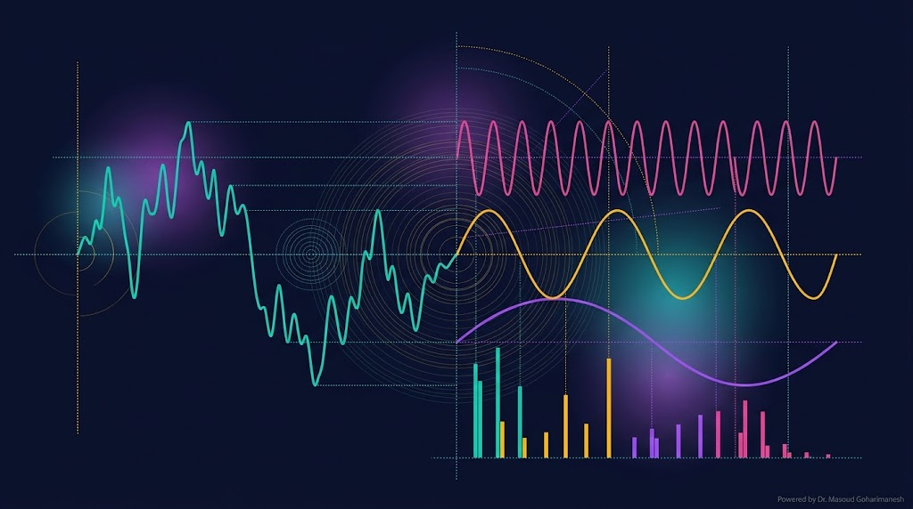
(Spectral Methods & Introduction to FEM) — جلسه ۱۶
دکتر مسعود گوهری منش
دانشیار گروه مهندسی مکانیک — دانشگاه تربت حیدریه
در جلسه ۱۵ با FD آشنا شدیم. FD ساده و انعطافپذیر است، اما برای مسائل با دقت بالا (مثل توربولانس، امواج، نانو رزوناتورها) به گامهای بسیار ریز نیاز دارد. روشهای طیفی با استفاده از توابع پایه سراسری و همگرایی نمایی، دقت بسیار بالاتری فراهم میکنند.
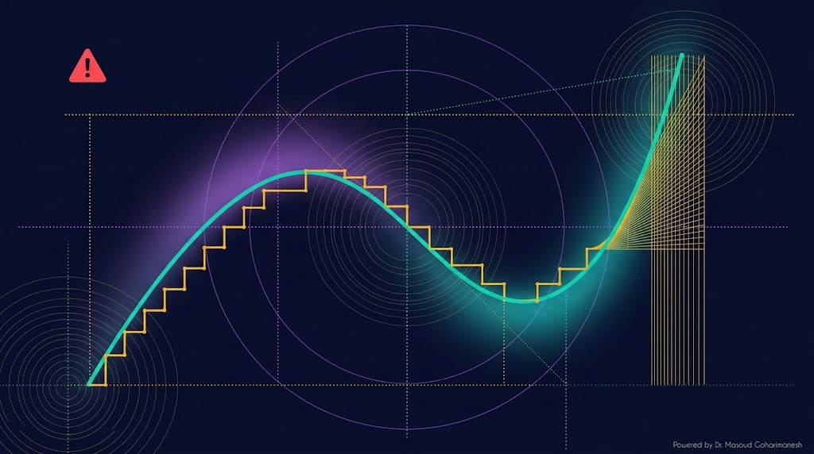
روش FD برای مسائل ساده عالی است، اما در مواجهه با چالشهای زیر ضعیف عمل میکند:
فقط $O(h^2)$ برای مشتق مرکزی
برای شوکها نیاز به شبکه بسیار ریز
خطای گرد کردن در شبکههای بزرگ
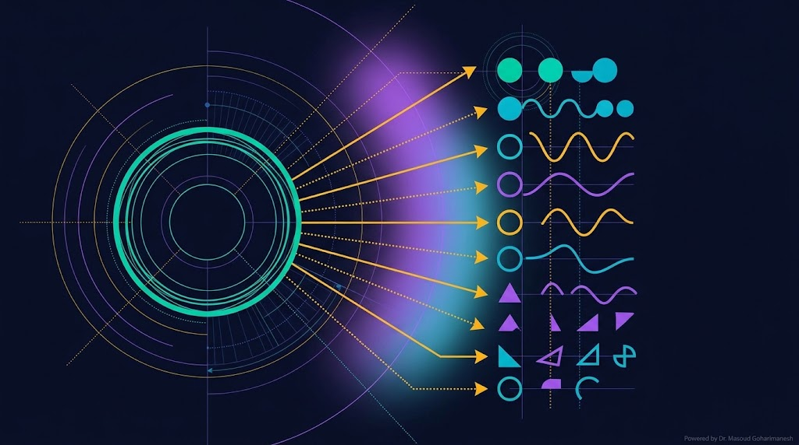
بهجای تقریب مشتق با finite difference، در روشهای طیفی جواب را بهصورت ترکیب خطی از توابع پایه سراسری مینویسیم:
توابع پایه (basis functions)
ضرایب (coefficients)
تعداد توابع پایه
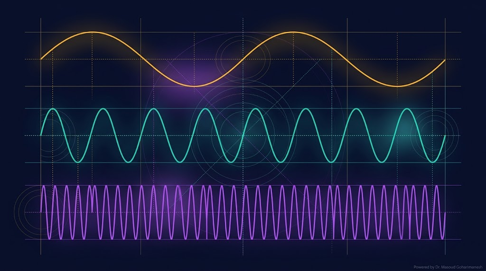
سادهترین و پرکاربردترین توابع پایه، توابع سینوسی هستند:
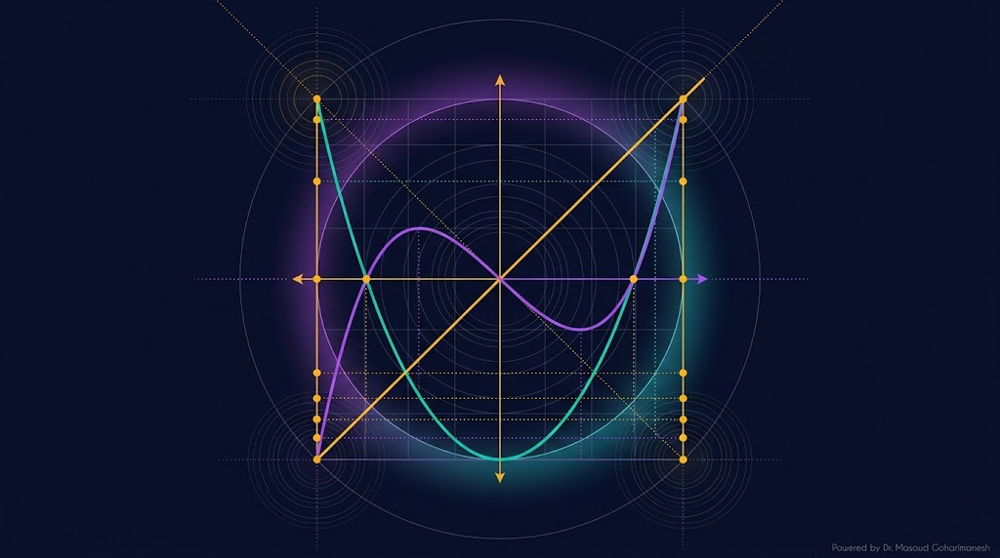
برای مسائل غیرتناوبی در بازه $[-1، 1]$، چندجملهایهای Chebyshev انتخاب بهتری هستند:
تعداد و نوع توابع پایه را تغییر دهید و دقت تقریب را ببینید.
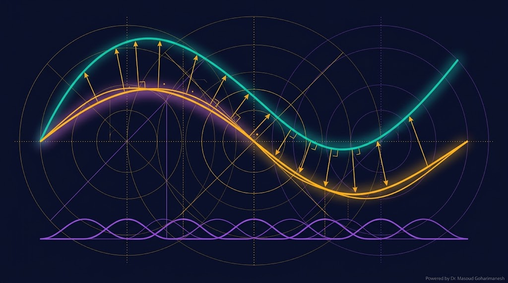
مسئله را بهصورت $\mathcal{L}(u) = f$ در نظر بگیرید. با جایگذاری تقریب $u_N$، یک باقیمانده بهدست میآید:
ایده Galerkin: باقیمانده باید متعامد بر همه توابع پایه باشد:
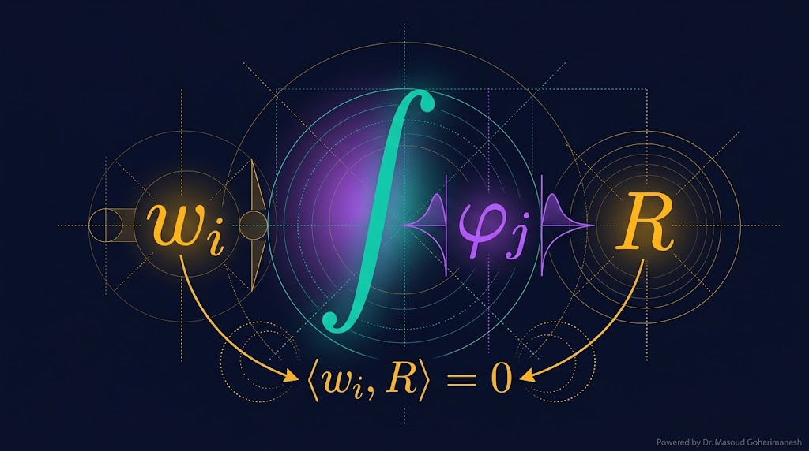
که $\mathbf{K}$ ماتریس سختی، $\mathbf{a}$ بردار ضرایب، $\mathbf{F}$ بردار بار است. حل این دستگاه، ضرایب $a_k$ را میدهد.
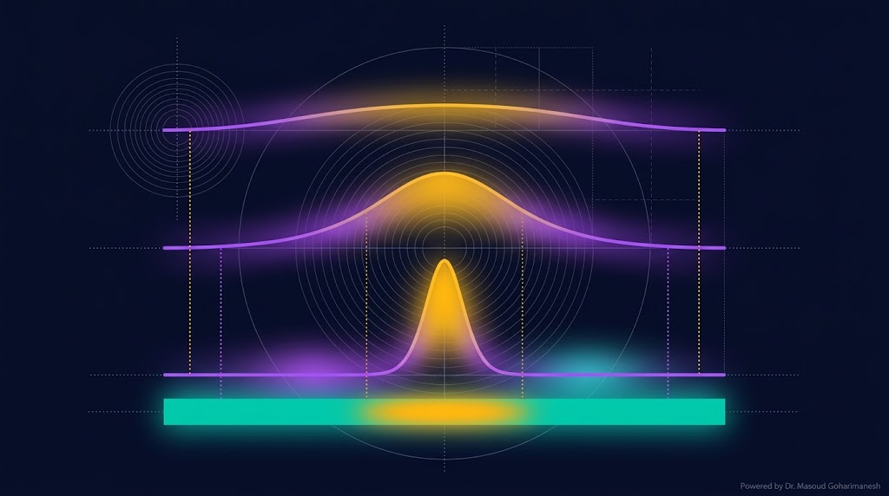
این معادله ساده (1D Poisson) را با روش Galerkin حل میکنیم. توابع پایه سینوسی:
ماتریس قطری است!
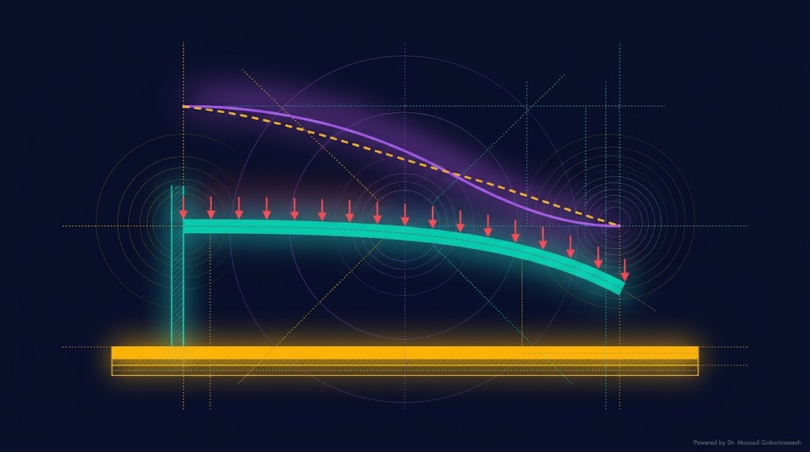
که $\phi_1(x)$ تابع شکل مود اول تیر یکسر گیردار است:
این معادله غیرخطی در $a_1$ است. با Newton-Raphson حل میشود:
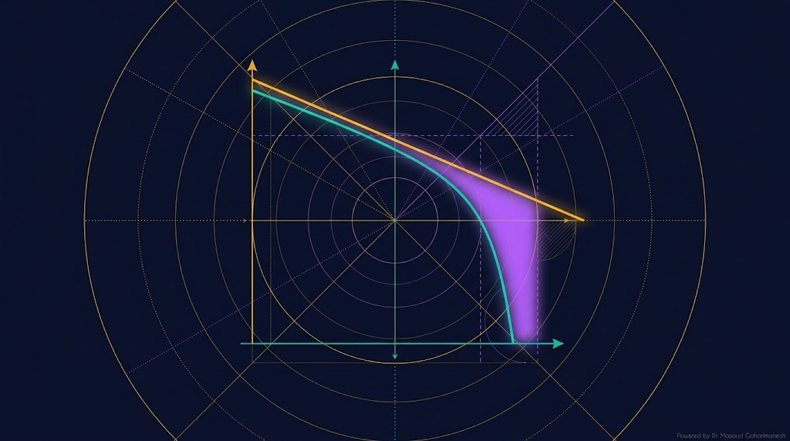
بزرگترین مزیت روشهای طیفی، همگرایی نمایی است. با افزایش $N$، خطا بسیار سریع کاهش مییابد.
همگرایی چندجملهای. برای دقت مضاعف باید $N$ را دو برابر کرد.
همگرایی نمایی. با افزایش خطی $N$، خطا بهسرعت صفر میشود.
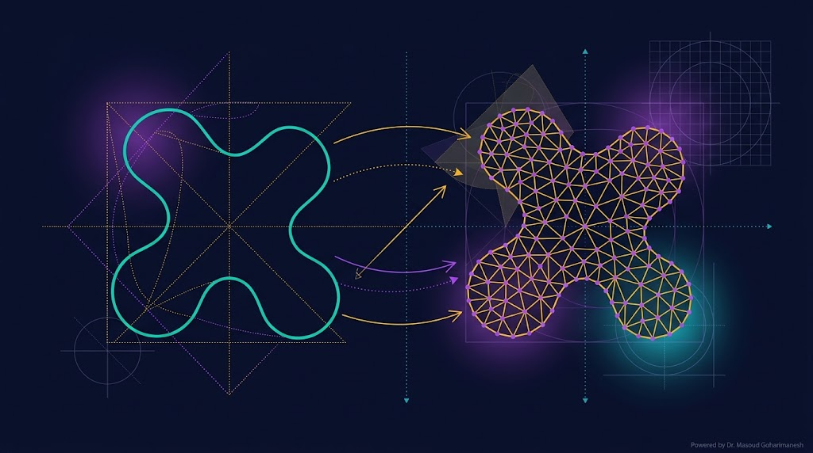
FEM یک روش محلی است — در مقابل روشهای طیفی که سراسری هستند. دامنه به عناصر کوچک تقسیم میشود و در هر عنصر، جواب با توابع شکل محلی تقریب زده میشود.
تقسیم دامنه به قطعات کوچک
نقاط مرزی عناصر
ترکیب ماتریسهای محلی
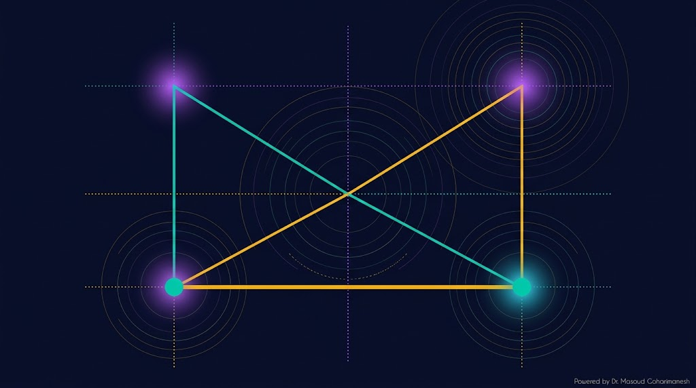
در سادهترین حالت، هر عنصر 1D دارای دو گره است. جواب داخل عنصر با درونیابی خطی تقریب میشود:
توابع شکل $N_1$ و $N_2$ در مختصات محلی $\xi \in [0، 1]$:
برای تیر، هر عنصر دارای ۴ درجه آزادی است: خمش و شیب در هر دو سر.
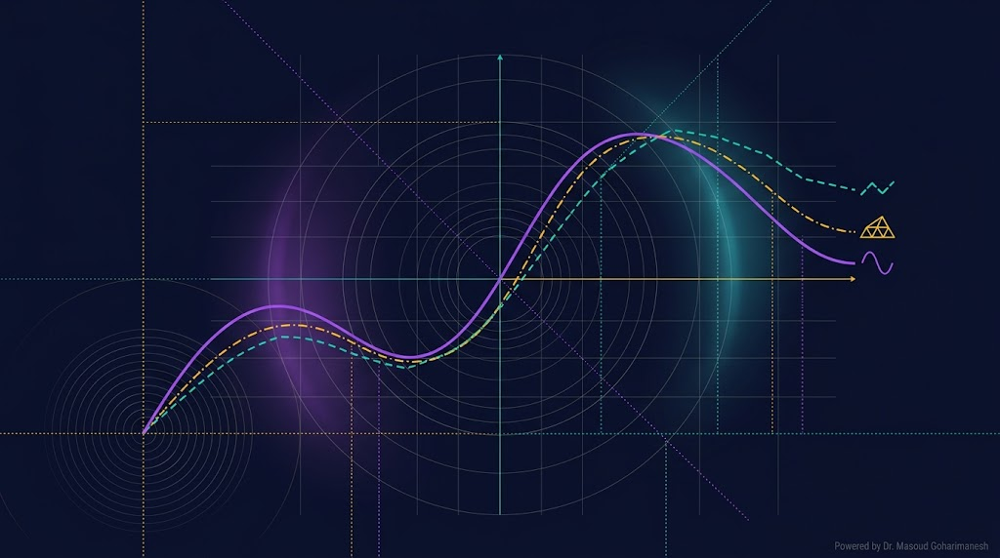
| ویژگی | Finite Difference | Spectral / Galerkin | FEM |
|---|---|---|---|
| نوع تقریب | محلی (نقاط) | سراسری (توابع) | محلی (عناصر) |
| مرتبه همگرایی | $O(h^p)$ | $O(e^{-cN})$ | $O(h^p)$ |
| هندسه پیچیده | متوسط | ضعیف | عالی |
| پیادهسازی | ساده | متوسط | پیچیده |
| کاربرد | مسائل عمومی | دقت بالا، ساده هندسی | سازه، CFD، صنعت |
| PINN / ML | ✓ سازگار | ✓ سازگار | △ تخصصی |
حالا یک مسئله واقعی (نانو انبرک) را با هر سه روش حل میکنیم و نتایج را مقایسه میکنیم.
| روش | خمش حداکثر (nm) | نقاط/جملات | زمان محاسبه |
|---|---|---|---|
| FD | ۳۸.۲۴ | ۱۰۰ | سریع |
| Spectral | ۳۸.۲۷ | ۵ | خیلی سریع |
| FEM | ۳۸.۲۵ | ۲۰ | متوسط |
| دقیق | ۳۸.۲۶ | — | — |
۱۰۰ نقطه، دقت خوب
۵ جمله، دقت عالی
۲۰ المان، انعطافپذیر
% === Galerkin Spectral برای -u'' = f === clear; clc; close all; L = 1; N = 5; % تعداد توابع پایه x = linspace(0, L, 200); % تابع f(x) = sin(pi*x) f = @(x) sin(pi*x); % === ضرایب Galerkin === a = zeros(1, N); for k = 1:N % F_k = int f(x) * sin(k*pi*x/L) dx F_k = integral(@(x) f(x).*sin(k*pi*x/L), 0, L); K_kk = (k*pi/L)^2 * L / 2; a(k) = F_k / K_kk; end % === حل تقریبی === u_N = zeros(size(x)); for k = 1:N u_N = u_N + a(k) * sin(k*pi*x/L); end % === حل دقیق === u_exact = sin(pi*x) / pi^2; % === رسم === figure('Color', 'w'); plot(x, u_exact, 'k-', 'LineWidth', 2); hold on; plot(x, u_N, '--', 'Color', '#ffb700', 'LineWidth', 2); xlabel('x'); ylabel('u(x)'); legend('Exact', sprintf('Galerkin N=%d', N)); title('مقایسه Galerkin Spectral با حل دقیق'); grid on; % چاپ ضرایب disp('ضرایب a_k:'); disp(a);
# === Galerkin Spectral for -u'' = f === import numpy as np import matplotlib.pyplot as plt from scipy.integrate import quad L = 1.0 N = 5 x = np.linspace(0, L, 200) # f(x) = sin(pi*x) def f(x): return np.sin(np.pi * x) # Galerkin coefficients a = np.zeros(N) for k in range(1, N + 1): F_k, _ = quad(lambda xx: f(xx) * np.sin(k * np.pi * xx / L), 0, L) K_kk = (k * np.pi / L)**2 * L / 2 a[k - 1] = F_k / K_kk # Approximate solution u_N = np.zeros_like(x) for k in range(1, N + 1): u_N += a[k - 1] * np.sin(k * np.pi * x / L) # Exact solution u_exact = np.sin(np.pi * x) / np.pi**2 plt.figure(figsize=(12, 6)) plt.plot(x, u_exact, 'k-', linewidth=2, label='Exact') plt.plot(x, u_N, '--', color='#ffb700', linewidth=2, label=f'Galerkin N={N}') plt.xlabel('x'); plt.ylabel('u(x)') plt.legend(); plt.grid(True, alpha=0.3) plt.title('Galerkin Spectral vs Exact') plt.savefig('galerkin_spectral.png', dpi=600, bbox_inches='tight') plt.show() print('Coefficients a_k:') print(a)
ارسال تمرینها:
m.goharimanesh@gmail.com
Subject الزامی:
[Advanced Engineering Mathematics] HW16 - نام و نام خانوادگی - شماره دانشجویی
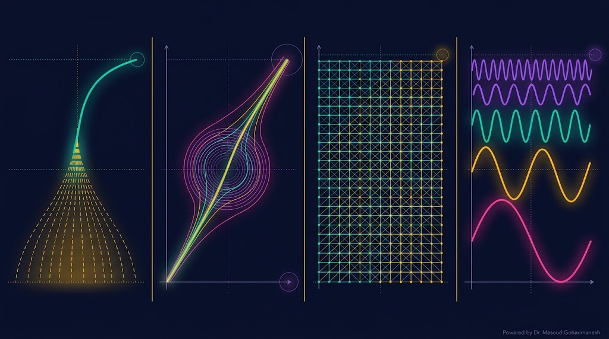
مقدمه Perturbation
LP و MS
FD و RK4
Spectral و FEM
با ابزارهای عددی و تحلیلی قوی، آماده ورود به عصر یادگیری ماشین هستید! 🌟
پایه تمام روشهای طیفی
مقدمه یادگیری ماشین
دکتر مسعود گوهری منش
دانشیار گروه مهندسی مکانیک — دانشگاه تربت حیدریه
🇮🇷 با افتخار برای دانشجویان مکاترونیک 🇮🇷
بوریس گریگوریویچ گالرکین (۱۸۷۱–۱۹۴۵) مهندس و ریاضیدان روسی بود که در سال ۱۹۱۵ این روش را برای حل مسائل مکانیک سازه معرفی کرد.
این روش ابتدا در حل مسائل الاستیسیته بهکار رفت و سپس به یکی از پرکاربردترین روشهای عددی در تمام شاخههای مهندسی و فیزیک تبدیل شد.
اگر جواب دقیق معادله $\mathcal{L}(u) = f$ را نتوانیم پیدا کنیم، آن را بهصورت ترکیب خطی از توابع پایه مینویسیم:
با جایگذاری، باقیمانده $R_N$ ظاهر میشود. ایده Galerkin این است که این باقیمانده را متعامد بر همه توابع پایه قرار دهیم:
کلمه Galerkin در اصل به مفهوم «نمایندگی از طریق مؤلفههای پایه» اشاره دارد. این ایده در جاهای دیگر هم دیده میشود:
این همان ایدهی بنیادی است که ابوریحان بیرونی در تفکیک حرکت سیارات به حرکات دایرهای ساده بهکار برد و امروز در قلب روشهای عددی مدرن قرار دارد.